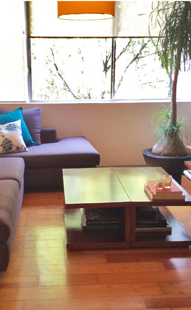
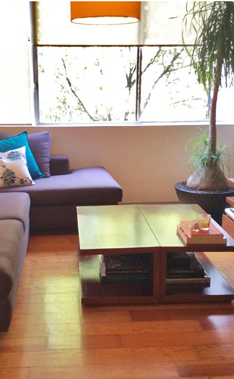
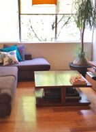
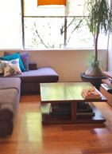

fernanda
 

I live in Mexico City, where I work as a film critic. That means staying in home for long periods of time, writing or watching films. I couldn’t do it if I didn’t love my place: the colors, the textures, the quiet atmosphere. Since I realized this (there was a time when I didn’t!) I give priority to surrounding myself with all things cozy.
I share my flat with Dulce: a pampered rescue who couldn’t be happier with my choice of a “livable” environment (which to her means having access to every corner). Neither of us had ever tried linen sheets before —and now we can’t understand how we ever survived without them. The day the package arrived in the mail I laid my ‘summer bed’ kit flat on the floor and she just rubbed against the sheets as if she were the one anticipating them all along. It was magical. From that day on, we look forward to crawling early into bed. And thanks to the bolsters and your suggestions on how to fill them, I’ve rediscovered the pleasures of bedtime reading. Good habits galore! ~ Fernanda
 
